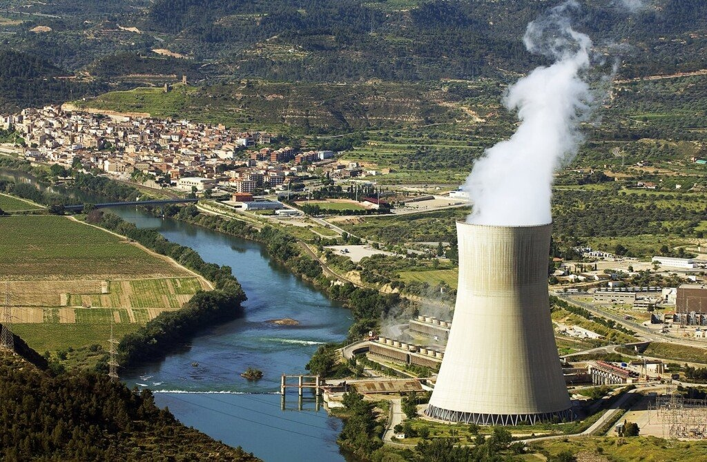
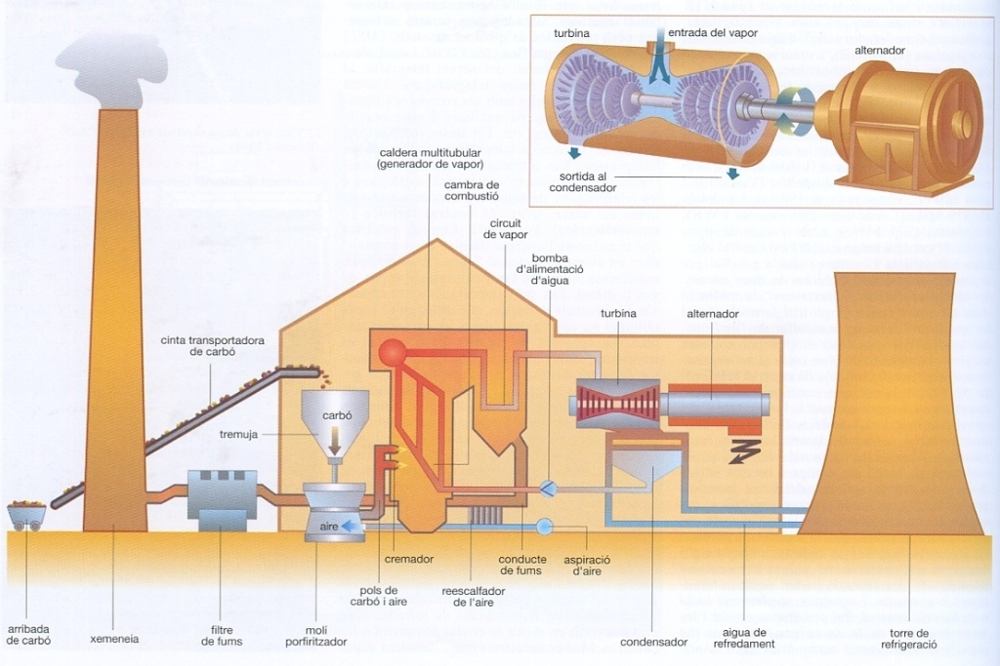
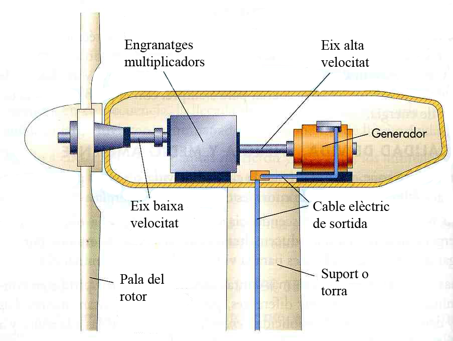
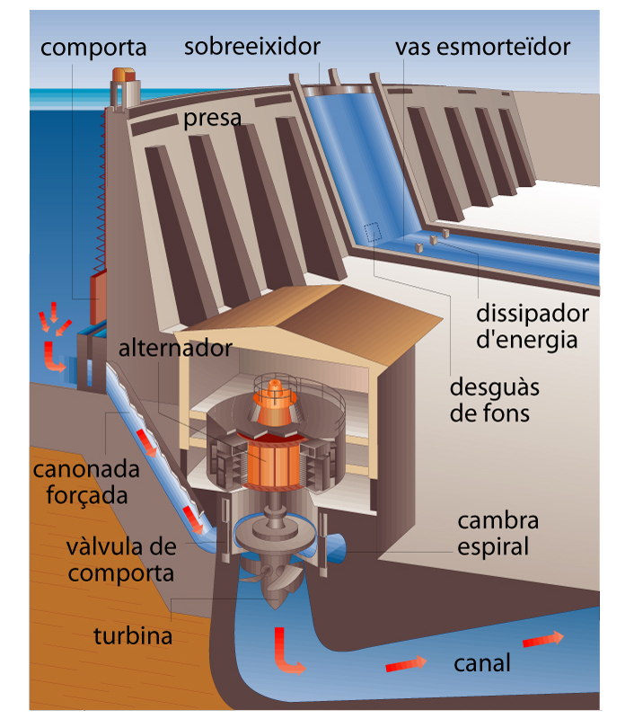

Comprèn les bases tecnològiques, ambientals, socials i econòmiques de la producció d'electricitat a Catalunya i aprèn a governar la transició energètica.
Acabes de ser nomenat/da cap del Departament de Territori, Habitatge i Transició Ecològica de la Generalitat de Catalunya.
En aquesta unitat entendràs com funciona la producció i el consum de l'energia elèctrica a Catalunya i com els diferents actors socials i econòmics influeixen en el sistema segons els seus respectius interessos.
L'objectiu final és que siguis capaç de liderar la transformació energètica del país i elaborar una proposta de model energètic per a Catalunya de cara al 2030, justificant les teves decisions tècniques, econòmiques i assolint el necessari consens territorial.

Aquest projecte interactiu t'ajudarà a entendre el debat energètic de Catalunya d'una manera pràctica i crítica a través dels següents objectius:
L'adquisició de competències, sabers i pensament crític d'aquest projecte s'avaluarà mitjançant quatre instruments complementaris:
Una font d'energia és qualsevol recurs natural, substància o fenomen físic de la natura del qual podem extreure energia útil per escalfar llars, moure vehicles o generar electricitat. Segons la seva capacitat de regeneració en l'escala temporal humana, es divideixen en dues grans famílies: Fonts Renovables (fluxos naturals inesgotables que es renoven contínuament) i Fonts No Renovables (estocs limitats acumulats durant milions d'anys que s'esgoten a mesura que es consumeixen).
A continuació es resumeixen les principals fonts d'energia utilitzades per la humanitat, amb la seva definició bàsica abans d'entrar al detall de cadascuna:
Dipòsits geològics finits que es van formar durant milions d'anys. El seu ritme de consum és infinitament més ràpid que la seva taxa de formació:
Fluxos d'energia naturals que la biosfera i la física terrestre regeneren contínuament i de forma inesgotable:
Catalunya té una taxa de dependència exterior de l'84,2% (2023), una de les més altes de la Unió Europea a causa d'importar el 100% de fòssils i urani. Passa el ratolí per sobre de les barres per veure on es consumeix cada recurs.
Passa el cursor sobre les barres de dependència energètica de cada recurs per entendre per què és clau en la geopolítica catalana.
Són reserves naturals d'energia acumulades durant milions d'anys per processos geològics. El seu ritme de consum és infinitament superior al de regeneració, per la qual cosa estan abocades a la seva desaparició a escala humana.
Roca sedimentària orgànica d'elevat contingut en carboni. Va ser el motor mecànic de la Revolució Industrial mundial i a Catalunya va alimentar les colònies tèxtils i fàbriques (vapor) i posteriorment grans centrals tèrmiques de producció elèctrica com la de Cercs (Berguedà) o la de Cubelles, ja desmantellades.
La central tèrmica de Cercs, inaugurada l'any 1971 a la comarca del Berguedà, va ser l'última gran instal·lació que cremava carbó per generar electricitat a Catalunya. Durant dècades va consumir el lignit extret de les mines locals de Fígols i posteriorment hulla d'importació, produint prop de l'1% de l'electricitat del país.
L'activitat de la central va estar marcada per una forta controvèrsia ambiental: les seves elevades emissions de diòxid de sofre (SO₂) van provocar greus episodis de pluja àcida que van devastar les pinedes del massís del Pedraforca i del Pirineu, desencadenant un dels primers judicis per delicte ecològic de la història de Catalunya.
La tardor del 2011, després de 40 anys d'activitat ininterrompuda i davant l'enduriment de la normativa europea sobre emissions contaminants, la planta va tancar definitivament les seves portes, posant fi a l'era del carbó elèctric català.
A finals del 2018, l'Estat espanyol va clausurar de manera sincronitzada les últimes 26 mines subterrànies i a cel obert de carbó a Astúries, Lleó, Terol i Palència, complint la directiva europea que prohibia concedir ajudes públiques a explotacions no competitives.
Aquest tancament va suposar la fi de dos segles ininterromputs de tradició minera que havien vertebrat l'economia de desenes de valls industrials. Per evitar la desertització econòmica d'aquests territoris, el govern i els sindicats van signar el primer gran acord de Transició Justa, dotat amb fons per a la restauració ambiental del paisatge miner i la formació dels treballadors en el desplegament d'energies renovables.
Mescla complexa de compostos orgànics (hidrocarburs) obtinguts de pous sota la superfície terrestre o marina. Encara que es destina principalment a la producció de combustibles per al transport de mercaderies i passatgers, el petroli s'utilitza en el sector elèctric (mitjançant fueloil i gasoil en motors tèrmics) en sistemes aïllats (com les Illes Balears o Canàries) o com a reserves d'emergència.
El novembre de 2002, el naufragi del petrolier monobuc Prestige davant la Costa da Morte gallega va alliberar més de 63.000 tones de fueloil pesat, causant la marea negra més devastadora de la història de la península Ibèrica.
L'abocament va contaminar més de 2.000 quilòmetres de litoral, exterminant milers d'aus marines i paralitzant completament la pesca i el marisqueig durant mesos. L'impacte va mobilitzar més de 300.000 voluntaris d'arreu d'Europa sota el lema "Nunca Máis".
La catàstrofe va obligar la Unió Europea a prohibir la navegació de petroliers de buc únic en aigües comunitàries, imposant l'obligatorietat del doble buc per evitar que una bretxa al casc buidi la càrrega a l'oceà.
Els conflictes bèlics a l'est d'Europa i a l'Orient Mitjà han provocat pujades dràstiques en la cotització internacional del barril de cru Brent, superant àmpliament la barrera dels 100 dòlars per barril i traslladant la inflació de forma immediata al transport i a tota la cadena alimentària.
Catalunya no disposa de cap jaciment de cru en producció i depèn en un 100% de la importació marítima de petroli que es descarrega al Port de Tarragona per a la seva refinació. Aquesta situació fa que l'economia catalana sigui extremadament vulnerable a les decisions de producció del càrtel de l'OPEP, reforçant la urgència d'electrificar la mobilitat i el transport ferroviari de mercaderies.
Barreja de gasos lleugers, composta principalment per metà (CH₄). S'utilitza en centrals de Cicle Combinat per generar electricitat amb molta rapidesa quan les renovables flaquegen. Tot i que emet en la combustió menys CO₂ per unitat de calor que el petroli o el carbó, el metà té un poder d'escalfament global 28 vegades superior al CO₂ si s'escapa directament a l'atmosfera sense cremar durant l'extracció o el transport.
El Projecte Castor va néixer com un magatzem submarí estratègic de gas natural situat a 22 quilòmetres de la costa de Vinaròs i Alcanar, aprofitant un antic pou petrolífer esgotat per dipositar reserves de gas a pressió.
La injecció de gas durant la fase de proves del setembre de 2013 va desencadenar una crisi sísmica sense precedents a la comarca del Montsià i el Baix Maestrat, amb més de 1.000 terratrèmols en pocs dies que van atemorir la població i van obligar el Ministeri a clausurar immediatament la plataforma.
El Tribunal Constitucional i el Tribunal Suprem van anul·lar la indemnització multimilionària que s'havia carregat inicialment a les tarifes ciutadanes del gas, convertint el Castor en el símbol dels riscos geològics i econòmics associats a les grans infraestructures de gas fòssil.
La fracturació hidràulica (*fracking*) consisteix a injectar aigua a pressió extrema barrejada amb sorra i dissolvents químics per trencar les roques de pissarra subterrànies i alliberar el gas d'esquist atrapat als porus.
Aquesta tecnologia va revolucionar la producció energètica als Estats Units, però estudis científics van demostrar que contamina greument les bosses d'aigua subterrània amb metà i compostos cancerígens, a més d'emetre grans quantitats fugitives de metà a l'atmosfera.
Davant la sol·licitud de permisos d'exploració a comarques com Osona, el Ripollès o la Segarra, la societat civil catalana va crear plataformes unitàries i el Parlament de Catalunya va aprovar normatives per blindar el territori i prohibir l'ús d'aquesta tècnica extractiva.
L'Urani-235 és un isòtop radioactiu present a l'escorça terrestre que s'extreu en mines de cel obert o subterrànies. Dins dels reactors nuclears (a Catalunya tenim Ascó I, Ascó II i Vandellòs II), la fissió controlada dels nuclis d'urani allibera una quantitat massiva d'escalfor que fa bullir aigua per moure turbines. A diferència dels fòssils, la reacció nuclear no genera combustió directa i, per tant, no emet gasos d'efecte hivernacle per la xemeneia.
A causa de la saturació de les piscines d'aigua on es refreden els elements de combustible gastat dels reactors catalans, les centrals d'Ascó i Vandellòs II han hagut de construir Magatzems Temporals Individuals (MTI) en sec a l'aire lliure dins del recinte de les mateixes plantes.
Aquestes instal·lacions custodien el combustible usat en grans contenidors metàl·lics i de formigó d'alta resistència davant terratrèmols i impactes, ja que l'Estat espanyol va cancel·lar el projecte d'un Magatzem Temporal Centralitzat (ATC) únic.
La gestió d'aquests residus altament radioactius és un dels principals desafiaments tècnics i financers de cara al procés de desmantellament dels tres reactors nuclears catalans, programat entre el 2030 i el 2035.
Durant gairebé una dècada, una empresa multinacional va tramitar la creació d'una gegantina mina d'urani a cel obert i una planta de concentrat de mineral al municipi de Retortillo (Salamanca), que pretenia convertir-se en l'única mina d'urani activa de la Unió Europea.
El projecte va aixecar una onada massiva de rebuig social a Castella i Lleó i Portugal, advertint de la tala de milers d'alzines centenàries, la pols radioactiva i el risc de contaminació d'aqüífers que desemboquen al riu Duero.
Finalment, el Consell de Seguretat Nuclear (CSN) i el Ministeri per a la Transició Ecològica van denegar definitivament els permisos ambientals i constructius per la manca de garanties sobre la gestió dels residus radioactius de la mineria.
Són aquelles que s'obtenen de sources naturals virtualment inesgotables, ja sigui per la immensa quantitat d'energia que contenen o perquè són capaces de regenerar-se de manera natural més ràpid del que es consumeixen.
Aprofita la radiació electromagnètica del Sol a través de dues branques tecnològiques complementàries:
• ☀️ Solar Fotovoltaica (Electricitat): Cel·les de Silici dopat que converteixen els fotons de llum directament en corrent elèctric (efecte fotoelèctric).
• 🔥 Solar Tèrmica (Calor i ACS): Captadors solars que absorbeixen la calor radiant per escalfar aigua per a dutxes (Aigua Calenta Sanitària), calefacció d'edificis o centrals termoelèctriques de concentració mitjançant miralls i sals foses.
A les comarques del Segrià, les Garrigues i la Noguera, sindicats agraris i plataformes ciutadanes han organitzat múltiples tractorades i mobilitzacions per protestar contra la concentració de grans parcs solars fotovoltaics sobre terrenys de conreu d'alt valor agrícola.
La pagesia denuncia que la compra o lloguer de milers d'hectàrees per part de fons d'inversió energètics encareix el preu del sòl rústic, expulsant els joves agricultors i amenaçant la sobirania alimentària del territori. Reclamen que les instal·lacions prioritzin zones industrials, teulades i espais periurbans abans d'ocupar camps fèrtils.
Aquest conflicte ha empès la Generalitat a modificar els criteris d'avaluació d'impacte ambiental i territorial, establint limitacions d'ocupació per garantir la continuïtat del sector primari català.
En només quatre anys, Catalunya ha multiplicat per deu la seva capacitat d'autoconsum solar, superant el llindar històric de les 100.000 instal·lacions sobre cobertes d'habitatges particulars, naus industrials i edificis públics.
Aquest creixement ha estat impulsat per la reducció de costos dels panells de silici, les bonificacions fiscals municipals en l'IBI i les ajudes dels fons europeus Next Generation. A més, s'han consolidat les comunitats energètiques locals, on veïns d'un radi de fins a 2 quilòmetres comparteixen l'electricitat generada a la teulada d'una escola o pavelló municipal.
Tot i aquest èxit cívic, els experts recorden que l'autoconsum només cobreix una fracció de la demanda industrial nocturna, fent indispensable combinar-lo amb emmagatzematge i xarxes intel·ligents.
La força mecànica del vent fa girar les pales de grans aerogeneradors instal·lats en zones muntanyoses (Terra Alta, l'Empordà, la Segarra) o mar endins en plataformes flotants. Aquest moviment fa girar un rotor central de coure i imants permanents generant corrent elèctric de forma neta.
La comarca de la Terra Alta concentra prop del 25% de tota la potència eòlica instal·lada a Catalunya, malgrat representar menys de l'1% de la població del país. Aquest desequilibri ha provocat protestes massives a municipis com Batea, Gandesa i Corbera d'Ebre.
Els veïns i el Consell Comarcal denuncien que la massificació de molins de vent altera el paisatge vitivinícola i la memòria històrica de la Batalla de l'Ebre, sense que això hagi servit per frenar la despoblació ni per generar un retorn econòmic equitatiu a la gent del territori.
El moviment reclama que les comarques metropolitanes, que consumeixen la immensa majoria de l'energia, assumeixin també la seva part de responsabilitat en la generació elèctrica neta.
El Parc Tramuntana és un projecte pioner d'eòlica marina flotant situat a més de 14 quilòmetres de la badia de Roses (Alt Empordà), dissenyat per aprofitar els forts vents marins de tramuntana amb aerogeneradors de fins a 15 MW cadascun.
Mentre els seus promotors defensen que el parc podria generar l'equivalent al 45% de la demanda elèctrica de tota la província de Girona sense ocupar espai terrestre, confraries de pescadors, ajuntaments costaners i associacions ecologistes s'hi oposen rotundament pel seu impacte en el paisatge de la Costa Brava i en la biodiversitat marina del Parc Natural del Cap de Creus.
Com a pas previ de consens científic, la Generalitat i l'Institut de Recerca en Energia de Catalunya (IREC) han impulsat la plataforma PLEMCAT per investigar de forma independent els efectes reals dels aerogeneradors marins sobre els ecosistemes mediterranis.
La caiguda de l'aigua des dels pantans de les muntanyes (recollint la pluja i el desglaç dels Pirineus) mou grans turbines hidràuliques acoblades a alternadors. Les centrals de bomball reversible actuen com a bateries massives: compren l'excedent elèctric solar del migdia per bombar aigua a un pantà superior i la deixen caure a la nit per produir energia.
L'extraordinària sequera que ha assolat les conques internes de Catalunya va reduir les reserves dels embassaments del sistema Ter-Llobregat a mínims històrics inferiors al 15% de la seva capacitat total.
Aquesta manca d'aigua va obligar a aturar per complet la turbinació elèctrica a la presa de Sau i a reduir la de Susqueda al mínim tècnic per prioritzar exclusivament l'abastament d'aigua potable a la població de l'àrea metropolitana de Barcelona i Girona.
La caiguda de més d'un 50% en la generació hidroelèctrica catalana va forçar el sistema a cremar més gas natural en centrals de cicle combinat, evidenciant la vulnerabilitat de la xarxa davant l'impacte climàtic.
Les centrals hidroelèctriques reversibles o de bombament (com les de Sallente-Estany Gento al Pallars Jussà o Moralets a la Ribagorça) disposen de dos embassaments connectats a diferents cotes d'alçada.
En les hores centrals del dia, quan hi ha excedent de producció solar i l'electricitat és barata, aquestes plantes utilitzen l'energia sobrant per bombar milers de litres d'aigua cap a l'embassament superior. Quan cau la nit i augmenta el consum familiar, l'aigua es deixa anar per turbinar-la en qüestió de segons.
Enginyers i operadors del sistema elèctric consideren que ampliar la capacitat de bombament és el mètode d'emmagatzematge a gran escala més madur i eficient per assolir el 100% de renovables a Catalunya.
Aprofita la fracció biodegradable dels residus forestals (estelles de fusta), agrícoles (esporgues d'olivera i vinya) o purins ramaders. Els residus sòlids es cremen per generar vapor, mentre que els purins es fermenten en digestors tancats per extreure metà (biogàs) i cremar-lo en motors de cogeneració.
A comarques amb una forta concentració porcina com Osona i el Pla d'Urgell, la gestió dels milions de litres de purins ha generat històricament una greu saturació de nitrats en els aqüífers d'aigua potable.
Per solucionar-ho, cooperatives ramaderes han posat en marxa plantes de digestió anaeròbia que capturen el metà que s'alliberaria a l'atmosfera i el transformen en biometà net. Aquest gas renovable es pot injectar directament a la xarxa convencional o utilitzar-se com a biocombustible per a camions pesants.
Aquest model d'economia circular redueix les emissions d'efecte d'hivernacle de la ramaderia i produeix a més biofertilitzant orgànic higienitzat per als camps.
Més del 64% del territori català és superfície forestal. L'abandonament dels conreus i la manca de gestió tradicional han provocat que milers d'hectàrees de bosc acumulin una excessiva densitat d'arbres joves i biomassa seca.
Projectes municipals a la Garrotxa, el Ripollès i el Berguedà aprofiten les estelles procedents de la neteja i aclarida dels boscos per alimentar xarxes urbanes de calor (*district heating*) que abasteixen d'aigua calenta i calefacció escoles, hospitals i habitatges públics.
Els bombers de la Generalitat destaquen que aquesta valorització energètica és la millor eina preventiva contra els incendis forestals de sisena generació, creant paisatges tallafocs i reduint la dependència del gasoil de calefacció.
La calor interna de la Terra (energia geotèrmica) pot aprofitar-se perforant a gran profunditat per fer bullir aigua o per a climatització mitjançant bombes de calor. Altres fonts inclouen la mareomotriu (força de les marees mogudes per la Lluna) i l'undimotriu (força de les onades).
L'aprofitament de la temperatura constant del subsol (entre 14 °C i 18 °C a pocs metres de profunditat) mitjançant bombes de calor geotèrmiques de circuit tancat està experimentant un creixement continuat en nous barris residencials i instal·lacions públiques de Catalunya.
Equipaments de referència com l'Hospital de la Santa Creu i Sant Pau a Barcelona, centres cívics a Olot o blocs de pisos de protecció oficial utilitzen pous geotèrmics per obtenir calefacció a l'hivern i refrigeració a l'estiu amb una reducció de fins al 70% en el consum elèctric.
L'Institut Cartogràfic i Geològic de Catalunya (ICGC) treballa en l'atles del potencial geotèrmic urbà per facilitar que els ajuntaments incorporin aquesta font 100% lliure d'emissions en la seva planificació urbanística.
Qualsevol decisió energètica requereix l'extracció de recursos de l'escorça de la Terra. La indústria extractiva té un gran impacte ambiental i social, i aquest impacte està mutant de forma radical amb la transició cap a un model descarbonitzat.
Durant més de 150 anys, hem perforat la terra per extreure carbó, petroli i gas natural. Això ha permès el creixement industrial de la humanitat, de vegades a costa d'enormes desastres de degradació local com les sorres bituminoses de Canadà o el vessament del golf de Mèxic de BP, i la contaminació d'aqüífers subterranis per abocaments químics.
L'activitat minera de potassa a municipis com Súria, Sallent i Balsareny ha estat fonamental per a la indústria de fertilitzants, però ha generat muntanyes gegantines de residus de sal (runams) acumulats a cel obert durant dècades.
La pluja que renta aquests runams ha lixiviat milers de tones de sal cap al riu Llobregat i els aqüífers del Cardener, augmentant la salinitat de l'aigua que abasteix milions d'habitants de Barcelona i forçant a construir plantes dessalinitzadores d'alt cost energètic.
Sentències judicials europees i catalanes han obligat les operadores a tapar i retirar els dipòsits salins i a construir col·lectors de salmorra per evitar que el dany ambiental s'agreugi.
Les tecnologies renovables (panells, aerogeneradors, bateries) no necessiten combustible durant la seva vida útil, però sí grans quantitats de minerals crítics per a la seva construcció. Això activa una nova mineria global de Liti i Cobalt per a bateries, Terres Rares (Neodimi) per a imants, i tones de Coure i Silici, generant nous conflictes socials i ambientals pel consum d'aigua.
El 'Triangle del Liti' entre Xile, Bolívia i l'Argentina concentra més del 60% de les reserves mundials d'aquest metall, clau per a les bateries dels cotxes elèctrics i els dispositius mòbils.
L'extracció s'efectua bombant salmorra subterrània cap a basses d'evaporació gegants als salars d'Atacama i Uyuni. Aquest procés evapora milions de litres d'aigua diaris en zones extremadament àrides, assecant les fonts hídriques de les comunitats indígenes atacamenyes i afectant la fauna local com els flamencs.
Més del 70% del cobalt mundial, un mineral utilitzat com a estabilitzador en els càtodes de les bateries d'ió de liti d'alta densitat, s'extreu a les mines de la província de Katanga a la República Democràtica del Congo.
Organitzacions internacionals de drets humans han documentat greus abusos en mines artesanals no regulades, com la manca d'equips de protecció bàsics, l'explotació laboral infantil i la contaminació de sòls i rius amb metalls pesants.
Aquest context ha forçat la indústria europea a desenvolupar químiques de bateries sense cobalt (com les LFP - liti ferro fosfat) i a exigir protocols estrictes de traçabilitat i reciclatge obligatori.
Abans d'analitzar el catàleg de centrals de Catalunya, cal recordar que l'electricitat no és una font d'energia que es pugui recollir directament de la natura. És un vector energètic secundari, el que significa que l'hem de produir transformant altres fonts d'energia primària (fòssils, nuclears o renovables) a través d'instal·lacions industrials de generació.
Són els recursos tal com es troben a la natura: estocs finits (carbó, gas fòssil, petroli o urani) o fluxos continus captats en temps present (radiació solar, vent, salt d'aigua fluvial o calor geotèrmica).
El moviment dirigit d'electrons per un conductor. És fàcil de transportar i versàtil, però gairebé totes les centrals (excepte la solar fotovoltaica) fan girar un alternador mitjançant una turbina per convertir energia mecànica en elèctrica.
Per analitzar i comparar les diferents tecnologies de generació, cal tenir clars aquests quatre conceptes fonamentals:
Les Renovables aprofiten fluxos naturals continus i inesgotables (sol, vent, rius, biomassa o calor de la terra). Les No Renovables consumeixen estocs finits del subsòl formats fa milions d'anys (urani, gas fòssil, carbó o petroli) que no es regeneren a escala humana.
L'electricitat s'ha de produir a l'instant en què es consumeix. Les fonts gestionables es poden encendre o modular a voluntat quan hi ha un pic (com el gas, la hidroelèctrica de presa, la biomassa o la geotèrmica). Les variables depenen del temps (els panells no generen de nit i els molins s'aturen sense vent).
Cap màquina no aprofita el 100% de l'energia. A les centrals tèrmiques (gas, nuclear o biomassa), bona part de l'energia es dissipa en forma de calor residual (només el 33%-60% es converteix en electricitat). En canvi, les centrals hidràuliques aprofiten el moviment de l'aigua amb rendiments molt superiors (> 85%).
Cremar combustibles fòssils com el gas o el carbó allibera milions de tones de CO₂ directe, agreujant l'escalfament global. Altres tecnologies (solar, eòlica, hidroelèctrica, geotèrmica o nuclear) tenen 0 emissions directes durant el seu funcionament diari.
Aquesta taula resumeix i compara de forma simple els aspectes clau de cadascuna de les tecnologies estudiades:
| Tecnologia | Tipus de Font | Gestionable? | Eficiència | Emissions CO₂? | Cost d'Inversió |
|---|---|---|---|---|---|
| ☢️ Central Nuclear | No Renovable | Sí (Base contínua) | Mitjana (33%) | No (0 directes) | Molt Alt |
| 🔥 Cicle Combinat (Gas) | No Renovable | Sí (Molt ràpida) | Alta (55%-60%) | Sí (Elevades) | Baix |
| ☀️ Solar Fotovoltaica | Renovable | No (Només de dia) | Baixa (18%-22%) | No (0 directes) | Baix |
| 🔥 Solar Tèrmica (ACS / Calor) | Renovable | Sí (Amb dipòsit tèrmic) | Molt Alta (>65%-70%) | No (0 directes) | Baix |
| 💨 Eòlica Terrestre | Renovable | No (Depèn del vent) | Mitjana (35%-45%) | No (0 directes) | Baix |
| 💧 Hidroelèctrica (Presa) | Renovable | Sí (Immediata) | Molt Alta (>85%) | No (0 directes) | Mitjà |
| 🌊 Eòlica Marina | Renovable | No (Més regular) | Alta (42%-50%) | No (0 directes) | Alt |
| ☀️ Termosolar (Sals Foses) | Renovable | Sí (Amb bateries tèrmiques) | Mitjana (28%-35%) | No (0 directes) | Alt |
| 🌲 Biomassa i Biogàs | Renovable | Sí (Base contínua) | Baixa-Mitjana (25%-30%) | Neutra (Cicle curt) | Baix |
| 🌋 Central Geotèrmica | Renovable | Sí (24h/365d) | Baixa-Mitjana (15%-22%) | No (0 directes) | Mitjà-Alt |
Abans de planificar o governar el futur model elèctric del país, és imprescindible conèixer d'on prové exactament cada unitat d'electricitat generada a Catalunya. Passa el ratolí per sobre de cada porció del formatge o de la llista per veure'n els GWh i el seu impacte ambiental.
Posa el cursor a sobre de qualsevol sector del formatge o de la llista per conèixer els detalls operatius i ambientals reals de Catalunya.
Gairebé el 90% de l'electricitat mundial es produeix mitjançant el mateix mecanisme físic: un fluid amb energia (aigua, vent o vapor a pressió) empeny els àleps d'una turbina, fent girar un alternador que converteix el moviment mecànic en electricitat per inducció electromagnètica (Llei de Faraday).

El combustible (carbó, gas o biomassa) arriba per tren o camió i s'emmagatzema a la tremuja. El molí triturador el redueix a pols finíssima per permetre una combustió ràpida i completa a l'interior dels cremadors.
La combustió a la caldera crema el combustible a més de 1.200 °C (*energia química → tèrmica*). La calor fa bullir l'aigua que circula per l'interior de milers de tubs, convertint-la en vapor a altíssima pressió i temperatura (550 °C).
El vapor s'injecta a gran velocitat i empeny els àleps de la turbina de vapor, fent girar el seu eix a 3.000 rpm (*energia tèrmica → mecànica*). L'alternador acoblat a l'eix converteix aquest gir en electricitat altern per inducció magnètica (*energia mecànica → elèctrica*).
El vapor que ja ha sortit de la turbina es refreda al condensador per tornar a ser aigua líquida i una bomba la reimpulsa a la caldera per reiniciar el cicle. La calor residual sobrant s'evacua a l'aire a través de la torre de refrigeració (el núvol blanc és vapor d'aigua net).
Els fums de la combustió passen obligatòriament per filtres electroestàtics per retenir sutge, cendres i partícules contaminants abans de ser alliberats a gran alçada a través de la xemeneia per afavorir la seva dispersió atmosfèrica.
Aquest mateix esquema de caldera → vapor a pressió → turbina → alternador → condensador és exactament el que utilitzen les centrals nuclears (substituint la flama per la fissió d'urani), les centrals de biomassa i la fase de vapor del cicle combinat de gas.

El vent empeny les pales del rotor, que tenen un perfil aerodinàmic com les ales d'un avió. La força de sustentació transforma l'energia cinètica del vent en rotació mecànica a baixa velocitat (10 a 20 rpm).
L'eix de baixa velocitat connecta directament el centre del rotor (boixa) amb l'interior de la góndola, transmetent tota la força de gir acumulada per les pales cap a la caixa mecànica.
L'alternador necessita girar molt més ràpid per generar electricitat. La caixa multiplicadora d'engranatges multiplica la velocitat per 50 o 100 vegades, passant de 15 rpm a més de 1.500 rpm a l'eix ràpid.
L'eix ràpid fa girar els imants del rotor dins dels bobinats de coure del generador elèctric (Llei de Faraday). Això transforma l'energia mecànica ràpida en energia elèctrica altern neta i 100% lliure d'emissions.
La torre (80 a 140 m) manté la turbina a la cota on el vent és més fort i net. El cable de sortida baixa l'electricitat pel centre de la torre cap a un transformador situat a la base per elevar la tensió i enviar-la a la xarxa elèctrica general.

La presa reté l'aigua del riu creant un gran embassament i acumulant energia potencial gravitatòria gràcies a l'alçada. La comporta d'admissió s'obre o es tanca per regular el cabal que entrarà al circuit elèctric segons la demanda.
L'aigua cau pel gran pendent de la canonada forçada d'acer. A mesura que perd alçada, l'energia potencial es converteix en energia cinètica i pressió hidràulica extrema en arribar a la vàlvula de comporta de la sala de màquines.
La cambra espiral distribueix l'aigua a pressió uniformement al voltant de la turbina (Francis o Kaplan). L'impacte de l'aigua contra els àleps fa girar l'eix vertical amb una eficiència física superior al 85% (*energia hidràulica → mecànica*).
L'alternador està connectat directament a l'eix de la turbina. Quan els imants del rotor giren dins de l'estator de coure, generen electricitat neta en corrent altern que s'envia als transformadors per al consum immediat de la població.
L'aigua turbinada surt neta pel canal de desguàs i es retorna al curs natural del riu. Si hi ha riuades, el sobreeixidor, el vas esmorteïdor i els dissipadors protegeixen la presa, mentre el desguàs de fons neteja els sediments acumulats.
Explora la termodinàmica, l'esquema visual, els costos del simulador i les notícies reals dels debats a Catalunya per a cadascuna de les 9 tecnologies de generació.
Funcionament Físic i Termodinàmic:
Es basa en la fissió nuclear: es bombardeja amb neutrons el nucli d'àtoms d'Urani-235 pesat, que es divideixen alliberant una gran quantitat de calor i més neutrons, generant una reacció en cadena controlada per barres de control (de bor o cadmi). Aquesta calor bull aigua a alta pressió en un circuit tancat (cicle termodinàmic de Rankine). El vapor d'aigua generat acciona turbines que fan girar alternadors per inducció electromagnètica de Faraday, creant corrent elèctric altern. Finalment, el vapor es condensa mitjançant l'aigua freda del riu o del mar i es refreda a les xemeneies hiperbòliques.
Al Joc: Proporciona la major potència constant de base, essent la clau per evitar dèficits elèctrics. Tot i això, requereix inversions inicials ingents, temps molt llargs i provoca el rebuig dels ecologistes, activant crisis per avaries o residus.
El Ministeri per a la Transició Ecològica i les empreses propietàries (Endesa i Iberdrola) van establir el calendari oficial de tancament ordenat dels reactors de la península. A Catalunya, Ascó I té fixat el tancament per al 2030, Ascó II per al 2032 i Vandellòs II per al 2035.
Aquesta decisió implica que en una sola dècada Catalunya haurà de reemplaçar més del 58% de tota l'electricitat neta que consumeix actualment, un repte sense precedents que exigeix accelerar la construcció de renovables i xarxes per evitar dèficits o dependència de l'exterior.
Davant la cancel·lació definitiva del Magatzem Temporal Centralitzat (ATC) que s'havia de construir a Villar de Cañas, Enresa ha optat per instal·lar Magatzems Temporals Individuals (MTI) en sec dins de cada central catalana.
Els alcaldes de la Ribera d'Ebre i del Baix Camp exigeixen garanties de compensació econòmica i seguretat ambiental per als municipis acollidors, ja que el combustible gastat haurà de romandre custodiat a les instal·lacions durant dècades després de l'aturada dels reactors.
Funcionament Físic i Termodinàmic:
Aquesta tecnologia acobla dos cicles termodinàmics consecutius per optimitzar el rendiment global fins a gairebé un 60%: 1. Cicle de Joule-Brayton (Turbina de Gas): Es comprimeix l'aire atmosfèric i es barreja amb gas natural a la cambra de combustió. La inflamació fa expandir els gasos a gran velocitat per moure una turbina de gas. 2. Cicle de Rankine (Turbina de Vapor): Els gasos d'escapament de la primera turbina, encara extremadament calents, passen per una caldera de recuperació de calor (HRSG) per bullir aigua i produir vapor d'aigua a alta pressió, que mou una segona turbina (de vapor) acoblada al mateix alternador.
Al Joc: És ideal com a sortida d'emergència en cas de dèficit a curt termini perquè es construeix molt ràpid. El gran inconvenient és l'emissió de gasos contaminants que ens poden exposar a greus sancions de la UE i al rebuig ecologista, a més de la dependència del cost de gas internacional.
A la desembocadura del riu Besòs (entre Sant Adrià de Besòs i Barcelona) operen tres grans grups de cicle combinat de gas natural que actuen com a suport clau per a la demanda elèctrica de l'àrea metropolitana.
Associacions veïnals i ecologistes reclamen un pla de desmantellament progressiu d'aquestes instal·lacions, alertant sobre les emissions d'òxids de nitrogen (NOx) i CO₂ en una de les zones més densament poblades i amb pitjor qualitat de l'aire de Catalunya.
Les fortes pujades en el preu internacional del gas natural líquid (GNL) derivades de tensions geopolítiques han posat de manifest la vulnerabilitat del sistema elèctric, ja que el gas fixa sovint el preu marginal de l'electricitat en el mercat majorista.
Per protegir la ciutadania, es va haver d'aplicar el mecanisme conegut com a "excepció ibèrica" per posar un topall temporal al cost del gas utilitzat a les tèrmiques, demostrant la necessitat de descarbonitzar el parc elèctric català.
Funcionament Físic:
Aprofita l'efecte fotoelèctric/fotovoltaic en materials semiconductors (generalment Silici dopat amb Fòsfor i Bor per crear una unió P-N). Quan els fotons de la llum solar impacten contra la cel·la, cedeixen la seva energia aos electrons, que salten la banda prohibida (bandgap) i s'alliberen. Això genera una diferència de potencial i un flux de corrent continu (DC). Un equip inversor el converteix a corrent altern (AC) a 50 Hz per injectar-lo a la xarxa elèctrica.
Al Joc: És verda, neta i barata de mantenir. Produeix una gran quantitat de MW adicionals a l'estiu (1.5x), però a l'hivern s'enfonsa la seva eficàcia (0.6x) i genera dependència si no es complementa amb altres fonts.
Catalunya ha experimentat una transformació ciutadana en la generació d'energia, superant les 100.000 instal·lacions d'autoconsum solar fotovoltaic a cobertes d'habitatges, comunitats de veïns i polígons industrials.
Aquesta energia distribuïda permet a milers de famílies estalviar directament en la factura elèctrica i alleujar la pressió sobre la xarxa elèctrica durant les hores centrals del dia.
Sindicats agraris com Unió de Pagesos i organitzacions territorials s'oposen a la instal·lació massiva de grans parcs fotovoltaics en terrenys agrícoles de regadiu i secà a les comarques de Lleida i la Catalunya Central.
Reclamen una planificació pública que prioritzi l'ocupació de terrenys industrials degradats, talussos d'autopistes i teulades urbanes per protegir la producció agroalimentària local.
Funcionament Físic:
Transforma l'energia cinètica del vent en energia elèctrica. La força de l'aire mou les pales dissenyades aerodinàmicament, fent girar un eix a baixes revolucions. Dins de la carcassa (góndola), una caixa multiplicadora d'engranatges incrementa la velocitat de gir fins a més de 1.500 rpm per accionar un alternador elèctric trifàsic. L'eficiència aerodinàmica màxima d'un aerogenerador està limitada teòricament pel Límit de Betz al 59.3%.
Al Joc: Proporciona un excel·lent suport a la tardor i sobretot a l'hivern (1.2x d'eficàcia), complementant la baixada de la solar. L'inconvenient principal és el gran desgast polític i l'oposició ciutadana a les comarques rurals escollides.
La comarca de la Terra Alta i les Terres de l'Ebre concentren una quarta part dels aerogeneradors de Catalunya. Plataformes veïnals reclamen una moratòria de nous projectes i un model energètic més equitatiu.
Exigeixen que les comarques metropolitanes de Barcelona i Girona, on es concentra la major part del consum industrial i domèstic, assumeixin també la instal·lació d'infraestructures d'energia neta.
Entitats de defensa del territori com Salvem l'Empordà han presentat al·legacions contra diversos parcs eòlics projectats a les carenes de la serra de l'Albera pel seu impacte en els corredors migratoris d'aus protegides i el paisatge empordanès.
El debat se centra a trobar un equilibri entre la necessitat urgent de desplegar renovables i la preservació dels valors naturals i turístics de cada comarca.
Funcionament Físic:
Aprofita l'energia potencial gravitatòria de l'aigua recollida a gran alçada en un embassament. Quan es requereix electricitat, s'obren les vàlvules i l'aigua baixa amb gran pressió per canonades forçades. El corrent d'aigua impacta i fa girar els àleps de la turbina: - Turbina Pelton: Per a grans alçades de caiguda i cabals petits. - Turbina Francis: Per a alçades mitjanes i cabals mitjans/grans. - Turbina Kaplan: Per a caigudes petites de rius molt cabalosos. L'eix de la turbina acciona l'alternador per induir el corrent elèctric, amb un rendiment excepcionalment alt, superior al 85%.
Al Joc: És l'única renovable convencional 100% gestionable de manera immediata (es triga pocs minuts a encendre-la). Tot i això, té la debilitat de dependre completament de les precipitacions: una sequera redueix la seva eficàcia al 10%.
Els mínims històrics d'aigua als embassaments del Ter i del Llobregat van forçar la suspensió de la turbinació elèctrica a pantans com Sau per preservar l'aigua potable per a la població.
Aquesta situació va reduir la generació hidroelèctrica a la meitat, mostrant la necessitat de diversificar les fonts i protegir els cabals ecològics davant les sequeres del canvi climàtic.
Instal·lacions reversibles com Sallente-Estany Gento al Pallars permeten bombar aigua a l'embassament superior durant les hores amb sol i turbinar-la ràpidament a la nit quan creix el consum.
Els experts destaquen que aquestes centrals hidroelèctriques reversibles són indispensables per estabilitzar la xarxa i emmagatzemar l'energia renovable sense dependre de bateries químiques.
Funcionament Físic:
Funciona de forma similar a l'eòlica terrestre, però utilitza turbines molt més grans instal·lades en el mar, recolzades sobre fonaments fixos (a pocs metres de fondària) o sobre plataformes flotants semisubmergibles ancorades al fons marí amb cadenes de fondeig d'alta resistència (necessari al Mediterrani per les grans profunditats de la costa). Com que el mar és pla i no té obstacles topogràfics, el vent és un 30% més fort i molt més constant, el que dobla la producció elèctrica per molí. L'energia es transporta per cables submarins a alta tensió fins a subestacions terrestres.
Al Joc: Està bloquejada d'inici (requereix aprovar la política corresponent). Ofereix una gran quantitat de megawatts verds constants, però exigeix pressupostos inicials gegantins, temps molt llargs i pot provocar tensions amb el turisme i la pesca.
El projecte d'eòlica marina flotant Parc Tramuntana planteja instal·lar molins d'última generació a més de 14 km de la costa del golf de Roses per abastir fins al 45% del consum elèctric de Girona.
Els promotors destaquen la força i constància del vent de tramuntana mar endins i l'estalvi d'ocupació de terreny a terra ferma.
Confraries de pescadors i empresaris turístics han mostrat preocupació per l'afectació sobre els caladors de pesca tradicional i l'impacte visual des del litoral del Parc Natural del Cap de Creus.
La Generalitat ha creat la plataforma de recerca PLEMCAT per analitzar científicament la convivència entre els aerogeneradors marins i la fauna mediterrània abans de l'autorització comercial.
Funcionament Físic i Aplicacions:
A diferència de la solar fotovoltaica (que fa electricitat a partir de la llum), la solar tèrmica capta directament la calor dels raigs del sol:
• 1. Solar Tèrmica de Baixa Temperatura (ACS i Climatització): Utilitza captadors solars plans a les teulades d'habitatges, gimnasos i hospitals. Una placa metàl·lica negra absorbeix la radiació solar i escalfa un circuit tancat d'aigua amb anticongelant. Aquesta calor es transfereix a un dipòsit d'Aigua Calenta Sanitària (ACS) per a dutxes o calefacció per terra radiant, amb un rendiment tèrmic excel·lent (> 65%-70%), estalviant milers de kWh de gas o electricitat.
• 2. Central Termosolar / Termoelèctrica (Alta Temperatura per a Electricitat): Utilitza centenars de miralls mòbils (heliòstats) que concentren la radiació en una torre central a més de 550 °C. La calor s'emmagatzema en dipòsits de sals foses (nitrats) per produir vapor i accionar turbines de generació elèctrica tant de dia com de nit (actuant com una autèntica bateria tèrmica renovable).
Al Joc: Està bloquejada d'inici. Aporta una gran quantitat de megawatts a l'estiu (1.5x) i, com que compta amb emmagatzematge tèrmic, permet continuar donant potència a la nit per cobrir els cims de demanda de sopar.
Les centrals solars termoelèctriques de torre i heliòstats escalfen sals foses a més de 550 °C, emmagatzemant calor per continuar generant electricitat amb turbines de vapor durant hores sense sol.
Aquesta capacitat de gestió nocturna converteix la termosolar en una alternativa neta per cobrir les hores punta de consum del vespre sense cremar gas fòssil.
Tot i el seu valor com a bateria tèrmica gestionable, l'elevat cost de construcció inicial i la necessitat de grans superfícies amb radiació solar directa han limitat el seu desplegament a Catalunya.
Els plans d'innovació europea busquen reduir costos de components per fer viable la seva integració en zones de transició industrial.
Funcionament Físic:
Consisteix a aprofitar els residus orgànics mitjançant dues vies: 1. Combustió directa: Es crema matèria forestal (estelles de fusta per netejar sotabosc, residus d'esporga agrícola) per escalfar aigua en una caldera, produint vapor que mou una turbina de vapor elèctrica. 2. Biogàs: Es recullen purins de granges o fems de vaques en digestors tancats sense oxigen (digestió anaeròbia). Els bacteris fermenten els residus i produeixen biogàs (ric en metà), que es purifica i es crema en motors de cogeneració. Es considera neutre en emissions de carboni perquè el CO₂ expulsat ja havia estat absorbit per la matèria orgànica durant el seu creixement recent.
Al Joc: Funciona com una central de base constant, independent de la meteorologia. Emet molt poques emissions reals comparat amb el gas natural. Tanmateix, sol provocar l'oposició de veïns pels fums i possibles males olors.
Plantes de digestió anaeròbia transformen les dejeccions ramaderes en biometà d'alta puresa, capturant el metà que s'alliberaria a l'atmosfera i evitant la filtració de nitrats als aqüífers d'aigua potable.
Aquest biogàs es pot injectar a la xarxa o aprofitar-se en motors de cogeneració per generar electricitat de base constant i calor per a granges i indústries locals.
L'aprofitament de la biomassa forestal procedent de la neteja de boscos densos permet alimentar calderes i xarxes de calor municipals a comarques de muntanya com la Garrotxa i el Ripollès.
Els serveis d'emergència destaquen que aquest aprofitament és clau per reduir la càrrega de combustible vegetal i frenar la propagació de grans incendis forestals.
Funcionament Físic:
Aprofita l'energia tèrmica emmagatzemada sota l'escorça terrestre (gradient geotèrmic). Es perforen pous de gran profunditat (entre 1.500 i 4.000 metres) per extreure fluids a alta temperatura (més de 150 °C). A la superfície, aquest fluid s'expandeix en forma de vapor per accionar una turbina de vapor acoblada a un alternador elèctric. Després de la turbinació, l'aigua es condensa i es reinjecta al subsòl mitjançant un pou de retorn, garantint un cicle tancat i sostenible que no esgota el jaciment. En instal·lacions urbanes (geotèrmia superficial), s'utilitzen bombes de calor geotèrmiques per climatitzar barris sencers amb màxima eficiència.
Al Joc / Al Sistema: Funciona com una autèntica font de base 100% renovable: produeix energia de forma ininterrompuda les 24 hores del dia, sense dependre del sol, del vent ni de les pluges. Requereix una inversió inicial considerable en sondejos i perforacions.
L'Institut Cartogràfic i Geològic de Catalunya ha desenvolupat estudis de subsòl a les conques del Vallès, la Selva i l'Empordà per avaluar jaciments a més de 2.000 metres de profunditat capaços de generar electricitat i alimentar xarxes industrials de calor.
Els geòlegs assenyalen que la calor de la terra és un tresor energètic autòcton i net que pot actuar com a pilar de generació contínua sense dependre de la meteorologia.
El districte tecnològic del 22@ i zones del Fòrum de Barcelona utilitzen xarxes integrades de geotèrmia somera i valorització tèrmica per distribuir aigua freda i calenta a centenars d'edificis d'oficines, hotels i habitatges.
Aquest sistema centralitzat redueix en més d'un 50% el consum elèctric dels aparells individuals d'aire condicionat i elimina la necessitat de calderes de gas particulars.
Explora com es comporta el sistema elèctric de Catalunya. La producció física real ha de cobrir sempre la demanda per garantir l'estabilitat i evitar talls de llum.
El consum elèctric de Catalunya té una base constant d'uns 7.000 MW. Aquesta base varia al llarg de l'any a causa del clima: a l'estiu (Q2), l'ús de l'aire condicionat incrementa la demanda un 15% (1.15x); a l'hivern (Q4), l'encesa de calefaccions i radiadors elèctrics la fa augmentar un 10% (1.10x). En canvi, a la primavera (Q1) i a la tardor (Q3), el clima suau manté el consum estable (1.00x).
La xarxa ha de mantenir un equilibri físic constant. Si la generació local és menor que la demanda, es produeix un dèficit i Catalunya ha d'importar electricitat d'Aragó o França a través de les línies d'alta tensió (MAT). Això és altament ineficient i costós, amb un preu d'importació penalitzador de 0.15 M€ per cada MW importat. Si es produeix un superàvit (generació major que demanda), l'excedent es ven al mercat internacional, però a un preu molt més baix de 0.04 M€ per MW.
Segons l'estació de l'any (trimestre), es poden donar diferents condicions meteorològiques extremes. Aquests fenòmens afecten directament la generació de les fonts renovables. Per exemple, una Sequera Històrica a l'estiu pot enfonsar el rendiment hidràulic al 10%, obligant a cremar combustibles fòssils per evitar apagades. Una DANA/Gota freda a la tardor provoca intenses nuvolositats que redueixen el rendiment solar a nivells mínims, mentre que un Temporal de Vent a l'hivern pot forçar l'aturada tècnica d'aerogeneradors terrestres per seguretat.
La Capacitat (MW) de cada central és la seva potència teòrica màxima. El Rendiment Base és l'eficiència real en condicions normals de la seva tecnologia: Nuclear (90%), Cicle Combinat (55%), Hidràulica (40%), Eòlica (35%) i Solar (22%). La generació real s'obté multiplicant la capacitat pel rendiment base, el percentatge de funcionament i el multiplicador estacional/climatològic. Això simula de forma realista com una planta solar o eòlica mai produeix al 100% de la seva capacitat física nominal de forma contínua.
Llisca el ratolí per sobre del gràfic lineal per analitzar els valors reals de demanda a cada hora. Compara la corba d'estiu (vermella) amb la d'hivern (blava).
Posa't a la pell dels diferents col·lectius de la societat catalana. Tria un rol, pren les 5 grans decisions del mandat i intenta aconseguir el màxim suport del teu propi grup sense enfonsar el consens del país.
El Centre d'Estudis d'Opinió de la Generalitat reflecteix la forta preferència social pel model d'autoconsum a teulades enfront del rebuig o dubte cap als grans parcs eòlics o la pròrroga nuclear. Passa el cursor per conèixer-ne els arguments.
Passa el cursor sobre cadascuna de les barres d'opinió social del CEO per analitzar els arguments de la població catalana.
El poble català vol preus elèctrics assequibles, sobirania local i protecció del territori, evitant macroprojectes o línies de transport forçades.
Els sectors econòmics i industrials prioritzen el creixement, la seguretat del subministrament elèctric i garantir preus competitius de l'energia.
Les plataformes ambientals defensen aturar les emissions de CO₂, accelerar el tancament de nuclears i vetllar per la biodiversitat terrestre i marina.
El Consens Parlamentari exigeix estabilitat de govern, compliment dels tractats de descarbonització de la UE i la gestió del pressupost públic.
Com a governant, el teu pressupost no només es destina a aixecar formigó i turbines. Pots aprovar lleis que redueixen el consum, milloren el preu de l'energia o fomenten el desenvolupament tecnològic de la xarxa.
Fes clic sobre les targetes de les polítiques públiques de sota per \"aprovar-les\" i dissenyar el teu propi pla de transició. Comprova si aconsegueixes assolir els objectius d'estalvi de potència sense passar-te del pressupost assignat.
Els fons europeus Next Generation han destinat més de 480 milions d'euros a Catalunya per finançar la rehabilitació energètica de parcs d'habitatges construïts abans del 1980, que sovint presenten un aïllament tèrmic molt deficient.
Les actuacions subvencionades inclouen l'aïllament de façanes amb sistemes SATE, la instal·lació de dobles vidres amb trencament de pont tèrmic i la renovació de cobertes. Aquestes millores permeten reduir el consum energètic en climatització entre un 30% i un 50%.
A més de disminuir les emissions contaminants de CO₂, aquestes reformes representen un estalvi substancial i permanent en la factura elèctrica i de gas de les famílies.
El desplegament del Pla MOVES a Catalunya canalitza ajudes directes tant per a l'adquisició de vehicles elèctrics com per a la instal·lació de punts de recàrrega ràpida en aparcaments privats i xarxes públiques.
Paral·lelament, es promou la substitució de les calderes tradicionals de gas i gasoil per bombes de calor aerotèrmiques i geotèrmiques d'alta eficiència per a la climatització d'habitatges.
L'objectiu estratègic és transferir el consum basat en derivats del petroli i gas cap a l'electricitat neta, reduint la dependència d'hidrocarburs exteriors i millorant la qualitat de l'aire urbà.
Les campanyes institucionals del Pla Renove ofereixen descomptes i incentius econòmics a les llars que substitueixen frigorífics, rentadores, assecadores o rentavaixelles antics per models certificats amb l'etiqueta energètica de classe A.
Els electrodomèstics obsolets arriben a consumir fins a tres vegades més electricitat que els aparells moderns d'alta eficiència, representant una fracció molt important de la despesa de les famílies.
La retirada dels aparells vells garanteix a més el reciclatge controlat dels gasos refrigerants i metalls a través de sistemes integrats de gestió de residus d'aparells elèctrics (RAEE).
La fiscalitat sobre les emissions de diòxid de carboni penalitza directament les activitats amb més impacte en el canvi climàtic, com els vehicles de combustió interna i les centrals tèrmiques de cicle combinat.
Els ingressos recaptats a través d'aquest tribut verd tenen caràcter finalista i es transfereixen al Fons Climàtic i al Fons de Patrimoni Natural per finançar projectes municipals d'adaptació al canvi climàtic, mobilitat sostenible i protecció de boscos.
Aquest gravamen incentiva la ciutadania i les indústries a optar per tecnologies més netes per evitar els costos fiscals associats a la contaminació.
La reforma fiscal ambiental planteja una reestructuració integral del sistema impositiu català seguint el principi ecològic internacional de "qui contamina, paga".
La mesura inclou taxes sobre les emissions dels grans vaixells de creuers i mercants que atraquen als ports de Barcelona i Tarragona, així com recàrrecs sobre els residus industrials no reciclables.
Aquest marc impositiu es compensa amb deduccions i bonificacions fiscals per a empreses que redueixin la seva petjada ecològica i inverteixin en processos industrials descarbonitzats.
L'establiment de desgravacions i incentius fiscals permet a les empreses industrials i de serveis reduir la seva quota impositiva quan inverteixen en tecnologies de transició energètica.
Les deduccions s'apliquen directament a la instal·lació de plaques solars en naus industrials, sistemes de recuperació de calor residual, aïllament d'edificis corporatius i flotes de transport 100% elèctriques.
Aquesta mesura estimula la col·laboració del sector privat i mobilitza milions d'euros d'inversió corporativa per accelerar els objectius nacionals de sostenibilitat.
Aquest gravamen extraordinari actua sobre els beneficis caiguts del cel (windfall profits) obtinguts per les grans companyies elèctriques i del sector dels hidrocarburs durant períodes d'alts preus internacionals del gas.
Com que el sistema marginalista del mercat fixa el preu de tota l'electricitat al cost de la tecnologia més cara, centrals nuclears i hidroelèctriques ja amortitzades obtenien guanys extraordinaris a costa de la ciutadania.
Els fons recaptats mitjançant aquest tribut s'utilitzen per finançar l'escut social, rebaixar temporalment els peatges elèctrics i protegir les petites empreses davant la inflació energètica.
El bo social tèrmic i els xecs d'emergència energètica són transferències directes de fons públics destinades a protegir les llars en situació de vulnerabilitat econòmica i pobresa energètica.
Aquests ajuts cobreixen directament part de les factures de llum, aigua calenta i calefacció durant els mesos més freds de l'any, evitant situacions de tall de subministrament en famílies amb infants o persones grans.
Aquesta eina d'escut social es complementa amb auditories energètiques gratuïtes per assessorar els usuaris en l'optimització de les seves tarifes de contractació.
El recàrrec turístic ambiental és un impost finalista que s'aplica a les pernoctacions en hotels, apartaments turístics i creuers que visiten Catalunya.
Els recursos recaptats es reinverteixen en la conservació d'espais naturals protegits, la millora de la gestió de l'aigua i el finançament d'infraestructures energètiques sostenibles a escala municipal.
Aquesta eina permet compensar la pressió que l'activitat turística intensiva exerceix sobre les xarxes de serveis públics i el medi ambient català.
El desplegament massiu de sensors intel·ligents d'IoT i sistemes d'anàlisi de dades en temps real permet monitorar l'estat de turbines, generadors, transformadors i línies d'alta tensió.
Mitjançant algoritmes d'intel·ligència artificial, les operadores detecten vibracions anòmales, microfissures o sobreescalfaments abans que es produeixi una fallada catastròfica a la xarxa.
Aquesta gestió preventiva redueix substancialment els costos d'aturada sobtada de les centrals i allarga la vida útil de les instal·lacions elèctriques estratègiques.
Els projectes d'innovació tecnològica en el sector hidràulic se centren en el redisseny aerodinàmic dels àleps de turbines Francis, Pelton i Kaplan mitjançant dinàmica de fluids computacional.
Les noves turbines permeten maximitzar la generació elèctrica fins i tot en règims de cabals molt baixos o variables, adaptant les centrals als patrons hidrològics provocats pel canvi climàtic.
A més, s'incorporen sistemes de pas per a la ictiofauna que redueixen dràsticament la mortalitat dels peixos en el seu trànsit fluvial.
La recerca avançada en enginyeria eòlica aborda el desenvolupament de nous materials compostos més lleugers i resistents per a la fabricació de pales de més de 100 metres de longitud.
Plataformes de proves com les impulsades per l'IREC a les costes catalanes avaluen sistemes d'ancoratge per a aerogeneradors marins flotants i mecanismes d'orientació intel·ligent segons els patrons de vent locals.
Aquests avenços tecnològics redueixen el cost anivellat de l'energia (LCOE) i minimitzen l'impacte acústic i visual de les instal·lacions.
La modernització integral de la xarxa elèctrica comporta la transformació cap a una xarxa intel·ligent (Smart Grid) amb capacitat bidireccional per gestionar la generació distribuïda.
La substitució de cablejat antic per conductors d'alta capacitat i la instal·lació de subestacions digitalitzades redueixen significativament les pèrdues de transport per efecte Joule.
Això permet una evacuació fluida de l'electricitat generada per milers de petites instal·lacions solars i eòliques sense col·lapsar les línies de distribució locals.
La planificació de noves línies de transport elèctric de Molt Alta Tensió (MAT) busca connectar els grans centres de generació eòlica i solar de l'Aragó amb els nodes de consum de l'àrea metropolitana de Barcelona.
Aquestes infraestructures d'interconnexió generen un intens debat social i institucional a Catalunya pel seu impacte en el paisatge, espais naturals protegits i sòls agrícoles.
Les administracions debaten entre aprofitar els corredors d'infraestructures existents o soterrar trams clau per minimitzar la petjada ecològica i el rebuig veïnal.
La simplificació administrativa i les bonificacions fiscals han permès a Catalunya superar la xifra de 100.000 instal·lacions d'autoconsum fotovoltaic actiu sobre teulades privades, comunitàries i municipals.
L'eliminació de traves burocràtiques i l'establiment de comunitats energètiques locals permeten que ciutadans i petits comerços comparteixin energia solar en un radi de proximitat.
Aquest model de generació distribuïda apodera el consumidor, redueix la dependència de les grans xarxes i allibera sòl rural de la pressió dels macroprojectes solars a terra.
Els sistemes d'emmagatzematge d'energia amb bateries a escala de xarxa (BESS) són peces clau per resoldre la intermitència del sol i el vent en el sistema elèctric català.
Aquestes instal·lacions d'alta capacitat s'ubiquen al costat de parcs renovables o subestacions elèctriques per absorbir els pics de producció diürna i descarregar l'energia durant les hores punta de demanda nocturna.
El desenvolupament de noves químiques de bateries més segures i duradores redueix la necessitat de mantenir enceses les centrals de gas fòssil com a suport d'emergència.
L'aliança de la Vall de l'Hidrogen de Catalunya aplega empreses químiques, centres universitaris i institucions per convertir el pol petroquímic de Tarragona en un referent d'electròlisi d'aigua amb electricitat renovable.
L'hidrogen verd permet substituir el consum massiu de gas natural fòssil com a matèria primera química i com a font de calor d'alta temperatura per als forns industrials i el transport pesat.
A més, actua com a vector d'emmagatzematge energètic estacional de gran escala quan hi ha sobreproducció de sol i vent a Catalunya.
La recerca en materials fotovoltaics avançats se centra en les cèl·lules solars en tàndem que combinen capes de silici amb perovskita cristal·lina d'última generació.
Aquesta combinació permet capturar un espectre molt més ampli de la llum solar, elevant el rendiment teòric de conversió elèctrica per sobre del 30% en comparació amb el 20-22% de les plaques convencionals.
Els centres tecnològics catalans investiguen processos de fabricació a gran escala que garanteixin la resistència d'aquests nous materials davant la humitat i la intempèrie.
Els programes d'educació i conscienciació ciutadana desplegats a les escoles i comunitats veïnals formen els ciutadans en l'hàbit del consum eficient, la gestió de la climatització i la interpretació de la factura de la llum.
Tallers pràctics i monitoratges de consum escolar demostren que petites accions quotidianes, com la regulació del termòstat i l'eliminació del consum en espera (stand-by), redueixen la despesa energètica de forma immediata.
Aquestes campanyes fomenten una cultura d'estalvi que disminueix la demanda global del país de manera sostinguda en el temps.
El debat sobre el calendari de desmantellament de les centrals nuclears d'Ascó (grups I i II) i Vandellòs II planteja la possibilitat d'allargar la seva llicència d'explotació més enllà dels 40 anys establerts pel pacte de tancament 2030-2035.
Els defensors de la pròrroga argumenten que la nuclear aporta més del 50% de l'electricitat a Catalunya sense emetre CO₂, garantint estabilitat a la xarxa mentre es completa la transició renovable.
Els opositors alerten de l'acumulació indefinitiva de residus radioactius d'alta activitat, els elevats costos de manteniment i el fre que suposa per a la inversió en energies netes i distribuïdes.
L'aprovació de decrets llei d'agilització administrativa redueix els tràmits burocràtics i els temps d'espera per a l'avaluació d'impacte ambiental de parcs solars i eòlics de petita i mitjana dimensió.
La finestreta única i la digitalització dels expedients permeten escurçar en diversos mesos els processos d'autorització administrativa i llicència d'obres municipals.
Els sectors industrials celebren la mesura per agilitzar les inversions, mentre que entitats ecologistes i plataformes veïnals reclamen mantenir el màxim rigor en la protecció de la biodiversitat i el sòl agrari.
L'aprovació del Pla d'Ordenació de l'Espai Marítim (POEM) per part de l'Estat ha definit la zona d'atenció prioritària del Golf de Roses com l'únic espai marí apte per al desenvolupament de parcs eòlics flotants a Catalunya.
El projecte experimental PLEMCAT servirà com a laboratori en mar obert per avaluar l'efecte dels aerogeneradors marins sobre els ecosistemes marins, les corrents i la pesca tradicional de la Costa Brava.
Aquesta tecnologia aprofita vents forts i constants mar endins sense ocupar terreny terrestre, tot i enfrontar-se a la preocupació del sector turístic i confraries de pescadors locals pel seu impacte paisatgístic.
La tecnologia solar termoelèctrica de concentració utilitza milers de miralls heliòstats per concentrar la radiació solar en una torre central, escalfant un circuit de sals foses a més de 500 °C.
Aquestes sals emmagatzemen l'energia tèrmica durant hores i permeten continuar generant electricitat mitjançant una turbina de vapor fins i tot durant la nit o en dies ennuvolats.
Tot i que requereix grans extensions de terreny amb alta insolació directa i una inversió inicial considerable, ofereix energia renovable gestionable i despatxable a voluntat del gestor de la xarxa.
El Pla territorial sectorial per a la implantació de les energies renovables a Catalunya (PLATER) ordena de manera exhaustiva el desplegament de parcs solars, eòlics, línies d'evacuació i sistemes d'emmagatzematge.
Mitjançant sistemes d'informació geogràfica (SIG) amb més de 140 capes d'anàlisi, el pla defineix les zones amb més capacitat d'acollida i preserva els sòls agraris d'alt valor productiu, corredors biològics i paisatges protegits.
Aquest instrument busca evitar la concentració desproporcionada d'instal·lacions en comarques concretes com la Terra Alta o les Terres de Ponent, promovent un equilibri territorial just i consensuat.